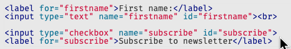

Accessibility and you
Semantic html
Many screen readers have functionality that allows a user to select to read only the headings on the page, or only the links. Giving precedence to the way headings and links are written is a significant way we can make browsing the web easier for these users.
div and span tags
use for layout design ONLY!!!!!
They’re semantically meaningless, they don’t have keyboard or touch support in any browser, and they don’t communicate anything to the accessibility API. For example, never use a div or span for a button when you could use a semantically meaningful button tag.
Neglected html
Semantic html tags
- header
- main
- article
- aside
- footer
- nav
- section
Headings
All pages should contain One h1 tag and should go into descending order.
Straight Forward Right
Forms
Labelling Controls
Provide labels to identify all form controls, including text fields, checkboxes, radio buttons, and drop-down menus. In most cases, this is done by using the
Approaches to labelling
- Explicitly declaring the label
- Hiding the label text, but still explicitly declaring
- using aria-label
- using aria-labelledby
- Using title attribute <- not ideal
Explicitly Labelling Buttons
This gives even further hints to peopole using screen readers as to what the actual button does
Example:
<button type="submit">Purchase <button>Grouping Controls
Grouping related form controls makes forms more understandable for all users, as related controls are easier to identify.
Radio buttons and chcekbox groups
These groups should always be wrapped inside a <fieldset> tag
Easy Peasy
Images and Icons
Decorative images
These images don't add information to the content of the page.
<img src="img/balloons.jpg" alt="">Icons
same as before, theyy sometimes are used in terms of decoration
these icons can all have an aria-hidden="true" for they are purely for aesthetics
Icon/Image Buttons

Icons and images used need to have an associated aria-label or "alt" attribute
ARIA
Accessible Rich Internet Applications (ARIA) is a set of attributes that define ways to make Web content and Web applications (especially those developed with JavaScript) more accessible to people with disabilities.